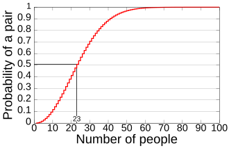
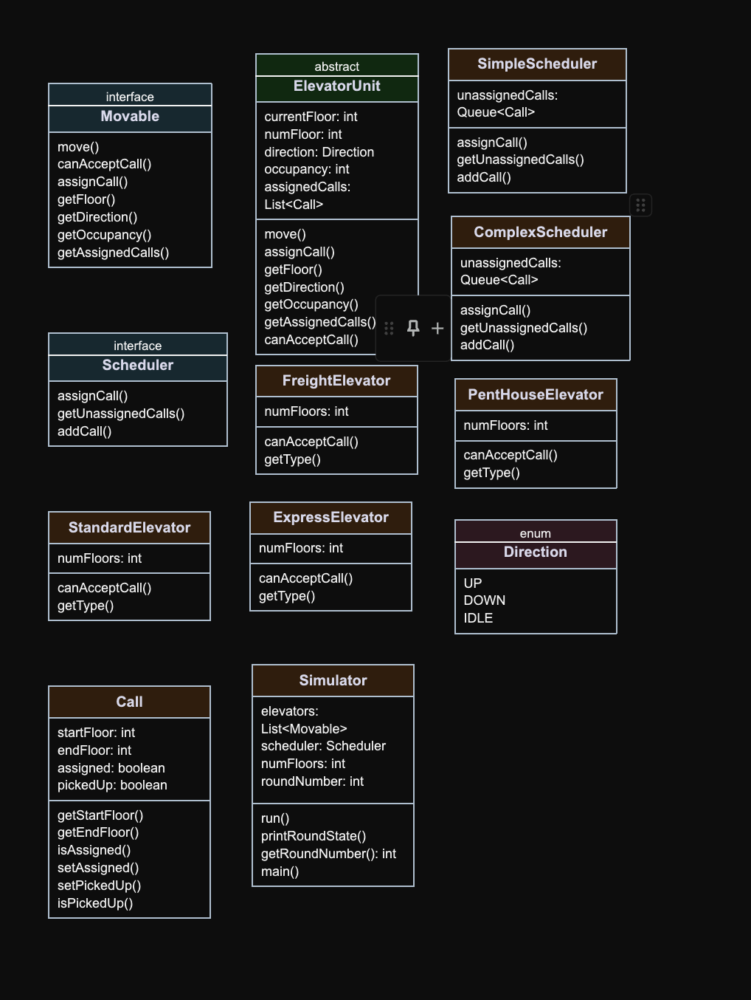
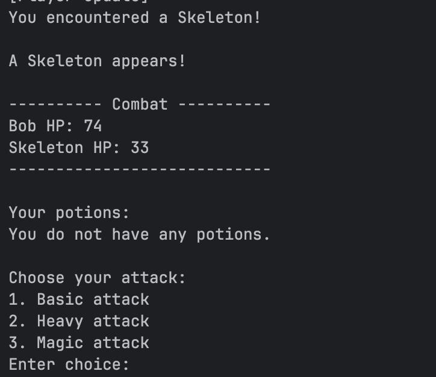

Projects

Birthday Paradox
How many people need to be in a room before there's a greater than 50 % chance that two share a birthday? The answer is just 23!
Functional requirements: We had make sure the code was clean and functional
Project design: …
Implementation: …

Elevator Simulator
A Java-based simulation of a multi-elevator building system, built as part of COMP 305: Object-Oriented Software Design at the University of San Diego.
Functional requirements: The simulator takes command-line arguments to configure the number of floors, elevator types, scheduler type, and a file of floor calls. Each round, the scheduler assigns a pending call to the most suitable elevator, and every elevator moves one floor toward its target, picks up or drops off passengers, or returns to floor 1 when idle. The simulation ends when all calls are completed and every elevator is back at the ground floor.
Project design: The design uses an abstract base class, ElevatorUnit, to share movement logic across all elevator types. Each elevator only overrides canAcceptCall() and getType(), following the Open/Closed principle. The Movable and Scheduler interfaces decouple the Simulator from concrete implementations, so swapping elevator types or scheduling strategies requires no changes to the Simulator.
Implementation: I was responsible for implementing the FreightElevator, ExpressElevator, ComplexScheduler, and Simulator classes, as well as the test suite using JUnit 5. The project followed a test-driven development process — each feature was written test-first with individual commits per test case. View on GitHub

Dungeon Daedalus
A text-based dungeon crawler RPG built in Java as part of COMP 305: Object-Oriented Software Design. The player explores a dungeon, fights enemies, manages inventory, and upgrades their character through a shop system.
Functional requirements: The game supports dungeon exploration across three directions per room. Enemies scale in difficulty as the player progresses. Boss encounters trigger difficulty increases. Players manage health, gold, weapons, armor, and potions across a persistent inventory. Combat is turn-based, with the player choosing an attack strategy each round and enemies responding with their own behavior strategy.
Project design: The project applies multiple design patterns. The Strategy pattern is used for both player attack types (BasicAttack, HeavyAttack, MagicAttack) and enemy behavior (RageDefensiveBehavior, DefensiveBehavior). The Factory Method pattern centralizes enemy and item creation through EnemyFactory and ItemFactory, allowing for future additions of emeny types. The Observer pattern decouples game event notifications from the UI through the GameObserver interface. Inheritance model both the enemy types and item types.
Implementation: I was responsible for the Player class, which serves as the central data model for health, gold, attack power, defense, weapon, and inventory management. I also implemented the Shop class, which handles weapon upgrades, armor upgrades, and potion purchases. I designed the Item class hierarchy, the abstract Item base class, Weapon, Armor, and the Potion subclasses
About Me
I am a fourth-year student at the University of San Diego, pursuing a Bachelor of Science in Computer Science.
I have a strong interest in software development and have enjoyed exploring topics like algorithms, data structures, and machine learning throughout my studies.
Outside of school, I enjoy exploring diffrent technologies, like linux for a homelab, docker, and swiftui for ios development. I also have a passion for flying FPV drones.
Contact Me
fajardoisaac21@gmail.com